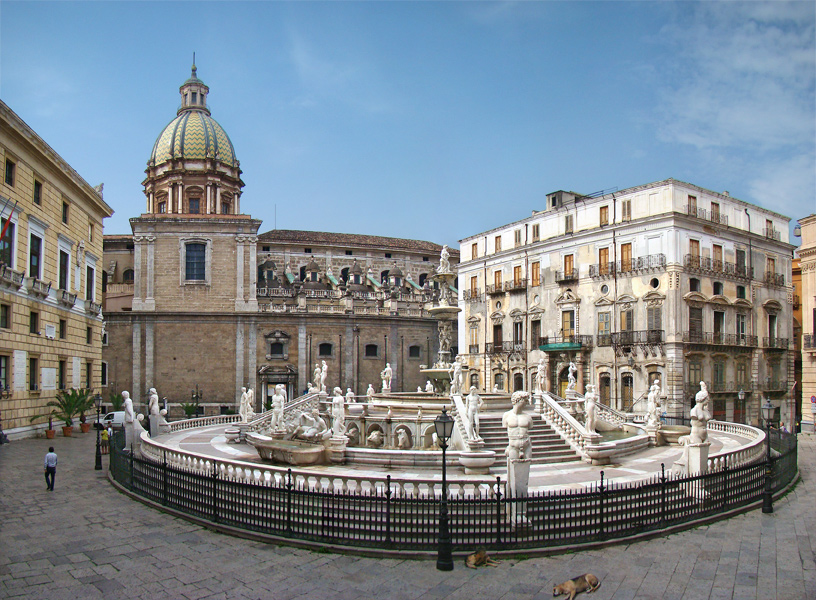

Piazza Pretoria

Descrizione
Piazza Pretoria si trova nel centro storico di Palermo ed è una delle piazze più famose della città. È conosciuta soprattutto per la grande fontana monumentale che occupa gran parte dello spazio della piazza. La zona è circondata da importanti edifici storici e rappresenta uno dei luoghi più visitati dai turisti.
Storia
La piazza è famosa per la Fontana Pretoria, costruita nel XVI secolo. Originariamente la fontana si trovava a Firenze, ma venne successivamente trasportata a Palermo nel 1574. Le numerose statue presenti raffigurano divinità, animali e figure mitologiche. Nel tempo la piazza è diventata uno dei simboli più riconoscibili della città.
Attività
- Visitare la Fontana Pretoria
- Fotografare le statue e l'architettura storica
- Passeggiare nel centro storico di Palermo
- Visitare i palazzi storici vicini